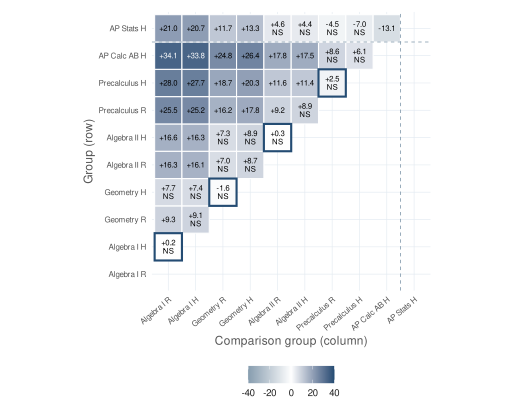

Problem
Department averages can conceal readiness gaps and class variation. Educators need to inspect the same questions and understand what a comparison can support.
Logos Education Group / Reporting & analytics
Assessment analysis across 500 fictional students, 21 classes, and 30 mathematics questions. Interactive distributions, course comparisons, and question-level results connect statistical evidence to instructional follow-up.
As founder and builder of Logos Education Group, my work includes the statistical analysis, reporting workflow, interpretation, validation, and interactive presentation.

The report retains uncertainty and comparison-family adjustments. The dashboard exposes those reviewed results without treating each filter change as a new statistical test.
Explore course comparisonsOverview
The 30-question form defines what is assessed. The dashboard exposes patterns across 500 fictional students and 21 classes. The report explains the evidence and proposes follow-up decisions for the department.
The same three findings guide both presentations: geometric readiness in Algebra II, uncertain differences between tracks, and variation among Regular Geometry classes.
System Story
Department averages can conceal readiness gaps and class variation. Educators need to inspect the same questions and understand what a comparison can support.
A checked import brings reviewed synthetic aggregates and interpretation into the portfolio. Native charts expose selected groups, intervals, and question results without recalculating the report's statistical tests. Original report figures remain reference assets.
Users can trace a department finding to a course, class, or question, download the displayed values, and inspect the corresponding assessment and written interpretation.
One administration can guide follow-up questions. It cannot establish growth, instructional effects, or a defensible placement cutoff.
Explore the work
Explore score distributions by course and track, inspect class and question results, and download filtered values. Native charts retain the original estimates and comparison families.
Open dashboardThe educator-facing interactive report covers courses, classes, comparisons, and content areas. Its supporting report retains the interpretation, question-level evidence, and methods.
Read supporting evidenceTake the same 30-question form and inspect its browser-based feedback. Personal practice answers do not enter the fictional department data.
Open assessmentThe report-aligned dashboard is implemented in the portfolio repository and imports the reviewed Logos reporting bundle. It does not claim that the Logos data passed through the earlier dbt pipeline.
The separate longitudinal demo, R report, and public Assessment Intelligence repository retain the earlier SQL/dbt/DuckDB workflow and its original data. They are separate demonstrations.
Projects Qualification / Historical August 2026 warehouse snapshot
Strongest education-data architecture candidate once the dbt check is relocatable. Static artifacts are reviewable now, but a live interview rebuild and public feature must use the repaired, release-synchronized commit.
The August 2026 relocation qualification describes an earlier warehouse snapshot, not this report dashboard. The warehouse repository documents dbt parity and release-candidate verification; this report alignment does not certify a fresh warehouse rebuild or establish that its published artifacts match a later source revision.
Safety Boundary
Public artifacts must not include real student names, emails, IDs, grades, rosters, LMS exports, submissions, or private school reporting artifacts. Canvas is treated as one possible adapter, not the project identity.